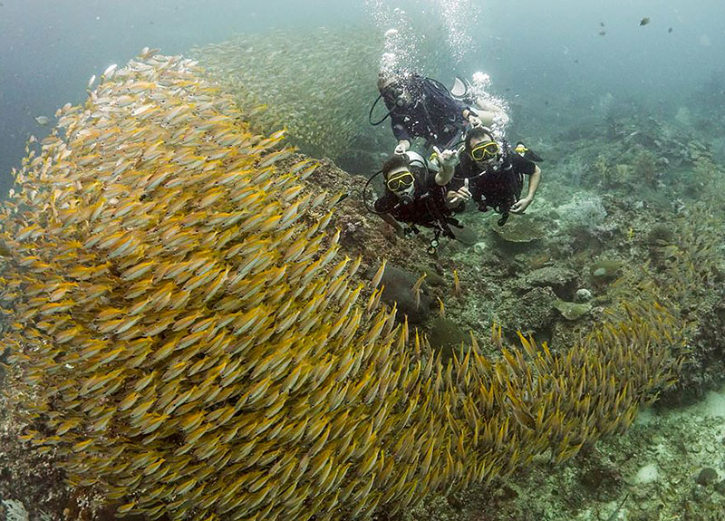
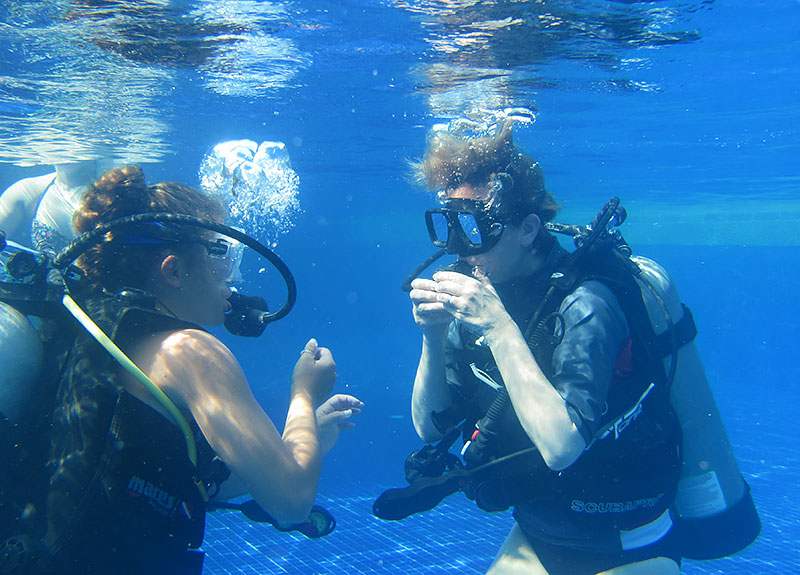
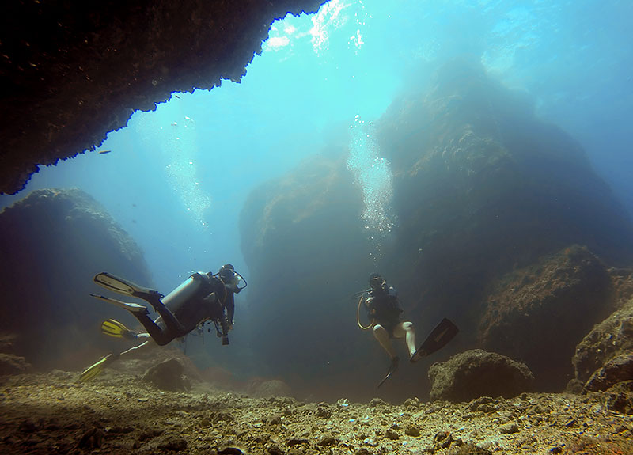

Schnuppertauchen

Der erste Atemzug unter Wasser. Beim Schnuppertauchen hast du den ersten Kontakt mit der Tauchasrüstung und der grundlegenden Tauchtheorie. An einem Tag mit einer Theorysitzung, einem Schwimmbadtraining und einem Tauchgang. Du wirst eine andere Welt erleben, die Tauchausrüstung tragen und bis zu einer Tiefe von 12m tauchen. Spektakuläre Fische und Korallen in der Unterwasserwelt warten auf dich.
Nach Ihrer Erfahrung wird Ihnen ein PADI-Abschlusszertifikat ausgestellt, mit dem Sie 1 Jahr lang mit einem PADI Pro bis zu einer Tiefe von 12 m tauchen können
Aber sei gewarnt, es macht süchtig und wenn du es einmal probiert hast, wirst du nicht mehr aufhören wollen.
Tauchschein

Der PADI Open Water Kurs ist bei Weitem der spaßigste Einstieg in den Tauchsport. Der Schüler lernt alle grundlegenden Fähigkeiten, um ein sicherer und sicherer Taucher zu werden, indem er eine internationale Zertifizierung erhält. Bis zu einer Tiefe von 18 Metern qualifiziert, kann der Student nun überall auf der Welt tauchen.
Theorie : Online oder im Klassenzimmer lerst du die Tauchtheorie, die du als Open Water Diver benötigst.
Confined water sessions : Fünf Sessions werden durchgeführt in confined water zum Erlernen grundlegender Tauchfertigkeiten
Freiwassertauchgänge : Vier Freiwassertauchgänge, die es dir ermöglichen, die Fähigkeiten, die du während der Sessions in Confined Wasser gelernt hast, anzuwenden und den Tauchorte zu erforschen
Der Kurs beinhaltet ein PADI-Handbuch, die Tauchasrüstung, Tauchlehrer und eine PADI-Zertifizierungskarte.
Weitere Kurse

Bring deine Wissen auf ein höheres Niveau! Lerne, unter Wasser zu navigieren, gehe tiefer und erkunde die verschiedenen Möglichkeiten des Tauchens in verschiedenen Umgebungen.
Dieser Kurs beinhaltet einen tiefen Tauchgang, um Ihre Tiefenbegrenzung auf 30 m zu erhöhen, und einen Navigationstauchgang, um Ihre Fähigkeiten zu verbessern. Du hast 3 weitere Tauchgänge gewählt: Drift, Peak Performance Auftrieb, Boot, Fisch ID, Suche & Bergen, oder Digitale Unterwasser Fotografie, Wrack ...
Der Kurs beinhaltet ein PADI-Handbuch, die Tauchasrüstung, Tauchlehrer und eine PADI-Zertifizierungskarte.